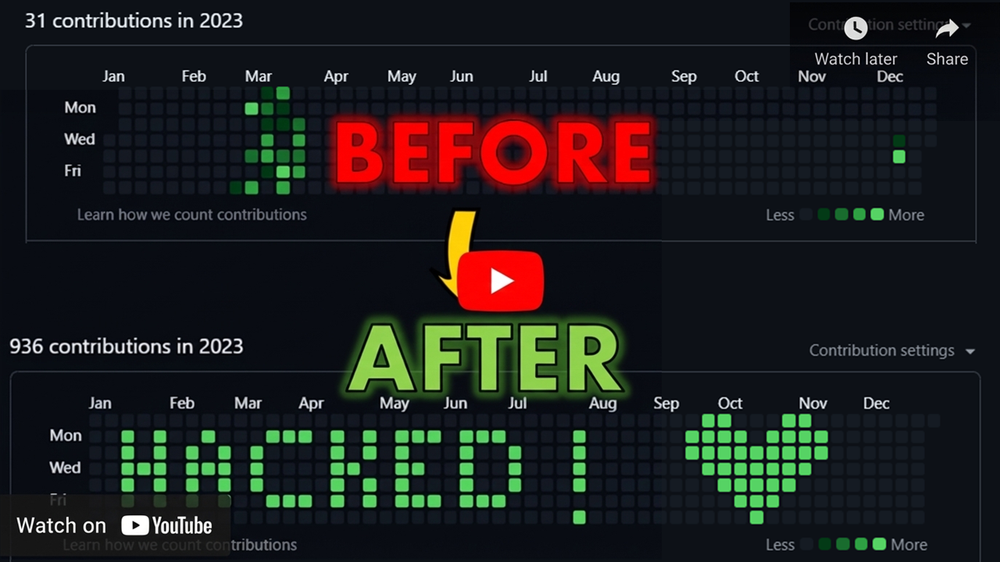

Guides & Tutorials
Learn how to master your GitHub profile graph, build beautiful contribution art, and explore tips to make your GitHub profile stand out to developers and recruiters.

📖 How to Use the Generator
A step-by-step guide to drawing patterns and exporting them to design your custom graph.
📊 Contribution Graph Explained
Understand how GitHub records contributions, colors, timezones, and how commits translate to pixels.
💡 Profile README Best Practices
Creative profile ideas, custom stats widgets, and how to showcase contribution artwork effectively.
🎨 Creative Pattern Gallery
Inspiring ideas for names, logos, shapes, and retro sprites you can paint on your graph.
📖 How to Use the GitHub Pattern Generator (8-Step Guide)
Follow these steps to generate, export, and write a custom design onto your GitHub contribution graph:
1️⃣ Generate pattern.json
Open the visual canvas editor on our homepage. Draw your custom letters, shapes, or pixel art by clicking on the grid:
- Left-Click to activate a cell (turns green).
- Right-Click to clear a cell (turns empty).
- Click Download pattern.json to save the layout grid locally.
2️⃣ Create a New GitHub Repository
- Create a new public or private repository on GitHub.
- This repository will host the contribution commits you are about to generate. We highly recommend using a completely empty repo so that you can easily delete it later if you want to reset your graph.
Clone your new repository locally:
git clone <your-new-repo-url>
cd <your-new-repo-name>3️⃣ Clone the Commit-Script Tool (Temporary)
Clone the open-source script utility locally in a separate, temporary directory:
git clone https://github.com/aurafarmerone/github-contribution-graph-hack.git4️⃣ Move Required Files Into Your New Repo
- Copy the commit generation script (
script.py) from the cloned tool folder and paste it into **your new repository root directory**. - Delete the cloned tool repository folder from your computer to avoid local
.gitdatabase conflicts.
5️⃣ Replace pattern.json
- Copy the
pattern.jsonconfiguration file you downloaded from our homepage editor. - Paste it into your new repository root, replacing the default placeholder file. Ensure the filename remains exactly
pattern.json.
6️⃣ Push Initial Setup to GitHub
Stage, commit, and push your repository's initial environment before executing the time-machine commits:
git add .
git commit -m "Initial setup for contribution pattern"
git push origin main7️⃣ Run the Python Script
Execute the commit generator script from your repository directory:
python script.pyWhen prompted by the console, enter the year you'd like to write the pattern into:
Enter year to draw pattern: 2025The script will parse your grid coordinates and generate commits with adjusted timezone variables for each active date.
8️⃣ View Result on GitHub 🎉
Open your GitHub profile page and scroll down to your Contribution Graph. Your custom green pattern will render! Note that GitHub can sometimes take up to 5-10 minutes to process commits and update the graph cache.
💡 Pro Tip: If you ever want to remove or reset the custom artwork, simply delete your commit repository on GitHub. Your graph will automatically revert to its previous clean state.
📊 GitHub Contribution Graph Explained
GitHub's profile contribution graph serves as a public ledger of your engineering activity. However, many developers don't know the exact rules governing how and when contributions are counted.
What Counts as a Contribution?
GitHub counts contributions when you perform the following actions:
- Commits: Commits must be made to a repository's default branch (usually
mainormaster) or thegh-pagesbranch. Also, the email address associated with the commits must match one of the verified email addresses on your GitHub account. - Pull Requests: Opening, merging, or commenting on pull requests in public or private repositories.
- Issues: Opening issues in repositories.
- Code Reviews: Approving or commenting on pull requests as a reviewer.
Understanding Colors & Shades
The graph displays five different color shades (ranging from gray for no commits to deep green for heavy commit days). These shades are calculated relative to your maximum daily commit activity over the past year.
If your busiest day has 20 commits, the green scale will be divided into ranges based on that number (e.g., 1-5, 6-10, 11-15, and 16+ commits).
Timezone Alignment
Contributions are displayed according to the timezone setting on your local system at the time of committing, parsed by git. When using automated scripts, ensure your script is injecting the timezone parameters correctly, or commits might shift by one day on your graph.
💡 Profile README Best Practices
Your GitHub Profile README is the billboard of your developer identity. It is the first section visitors see when searching your name, and it is a key asset for recruiters. Here's how to make it premium:
1. Keep it structured and scannable
Recruiters spend an average of 10 seconds scanning a profile. Use clear headings, list items, and clean tech-stack badges instead of long, dense paragraphs of text.
2. Share your projects, not just your tech list
Instead of just listing logos (e.g. React, Node, Python), include a short section highlighting your best two projects. Describe the problem they solve, the stack used, and link directly to the repository or live site.
3. Display Dynamic Stats Widgets
Add live cards representing your stats (e.g., total commits, PRs, top languages). Tools like github-readme-stats generate these dynamically based on your profile metadata.
4. Show off your graph art
Having custom contribution graph artwork (like a wave, logo, or message generated using our tool) is a great conversation starter and shows your creativity and familiarity with Git configuration!
🎨 Creative Pattern Gallery & Ideas
Need inspiration for what to draw on your contribution graph? Here are some popular design categories that work exceptionally well on the 53x7 canvas:
1. Text & Messages
Writing short words or names is the most common form of graph art. Since the grid height is limited to 7 pixels, use a simple 5x5 pixel-style font for letters:
- Write your initials (e.g.,
"RT"). - Write short tech words:
"CODE","GIT","DEV". - Spell out year markers (e.g.,
"2026").
2. Retro Games Sprites
8-bit retro games are structured on small grids, making them perfect for your calendar graph:
- Space Invaders: The iconic alien sprite fits comfortably within a 7-pixel height constraint.
- Pac-Man & Ghosts: Draw Pac-Man chasing a small ghost.
- Hearts: Simple pixelated hearts at the center or corners of your graph.
3. Abstract Fades & Gradients
Instead of solid patterns, you can create smooth horizontal or vertical gradient fades. Draw lines that transition from sparse cells (light green) to dense clusters (dark green) to create a visual "shimmer" effect.